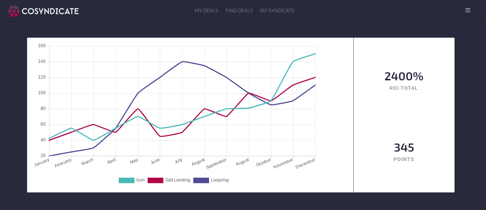

BrioVR is a web app that simplifies creation of 3d content over the web. Brio takes 3D models and puts them in a place where they can be viewed through any VR or AR ready device.
Projects
Cosyndicate

Cosyndicate is a place for investors interested in the crypto currency space to review and purchase cryptos as groups or syndicates.

Ordo
Ordo is a site for users to browse menus from a list of restaurants. They can select one or more dishes and place an order for pick-up. They will receive a notification via Twilio when their order is ready. Restaurant owners can add and edit their menu items. Both clients and restaurant owners can view their current and past order histories.